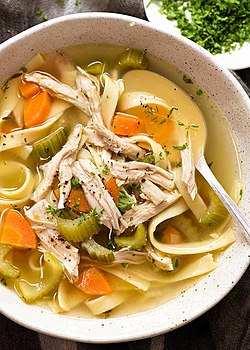

Chicken Soup
Home

Description
This recipe is for making chicken soup.
Ingredients
- chicken
- salt
- pepper
- veggie/olive oil
- scallion
- garlic
- onions
- chicken broth (two 32 ounces)
- carrots
- zucchini
- green beans
- celery
- thyme
- water
- potatoes
Steps
- Season chicken with salt and pepper (and whatever other seasonings you want, e.g. garlic powder and cumin).
- Heat veggie/olive oil on medium.
- Sear the chicken (cooking only the outside; it will finish cooking in the soup).
- Take chicken out.
- Saute scallion, garlic and onions until soft.
- Put back in chicken.
- Add chicken broth (two 32 ounces).
- Add carrots, zucchini, green beans, celery.
- Sprinkle thyme.
- Add 1.5 cups of water.
- Bring to a boil.
- Reduce to a simmer for a couple of hours.
- Add potatoes (cut into large pieces (quarters, so they're easy to pull out) and put in 30 minutes before serving).